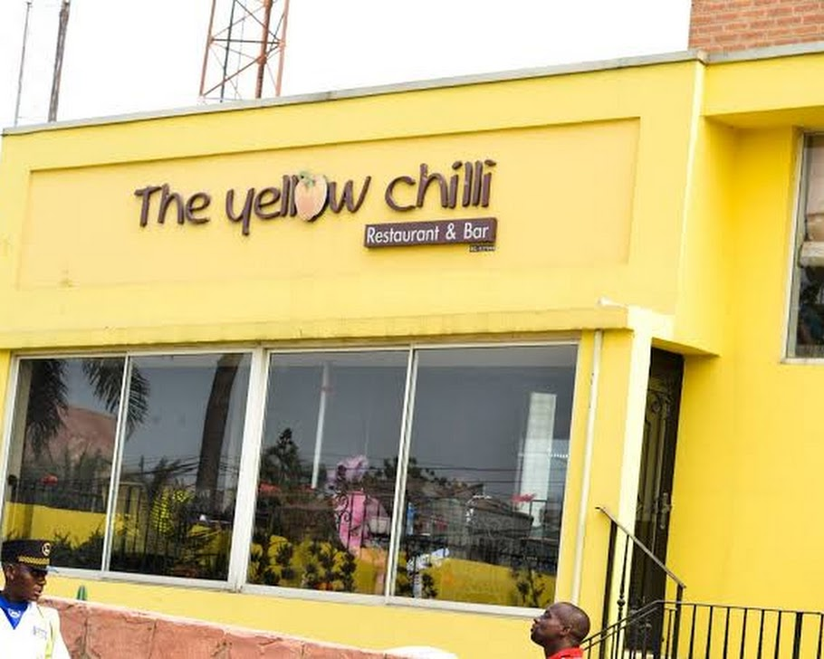
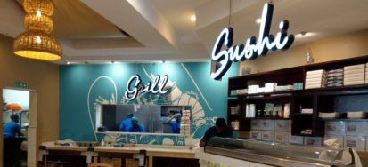

Yellow Chilli
Modern Nigerian dining with premium local dishes.
A curated list of restaurants where you can enjoy great Nigerian meals.

Modern Nigerian dining with premium local dishes.

Cultural hub with traditional Nigerian meals and art.
Luxury dining with a skyline view of Lagos.

Seafood-focused restaurant with fresh international dishes.